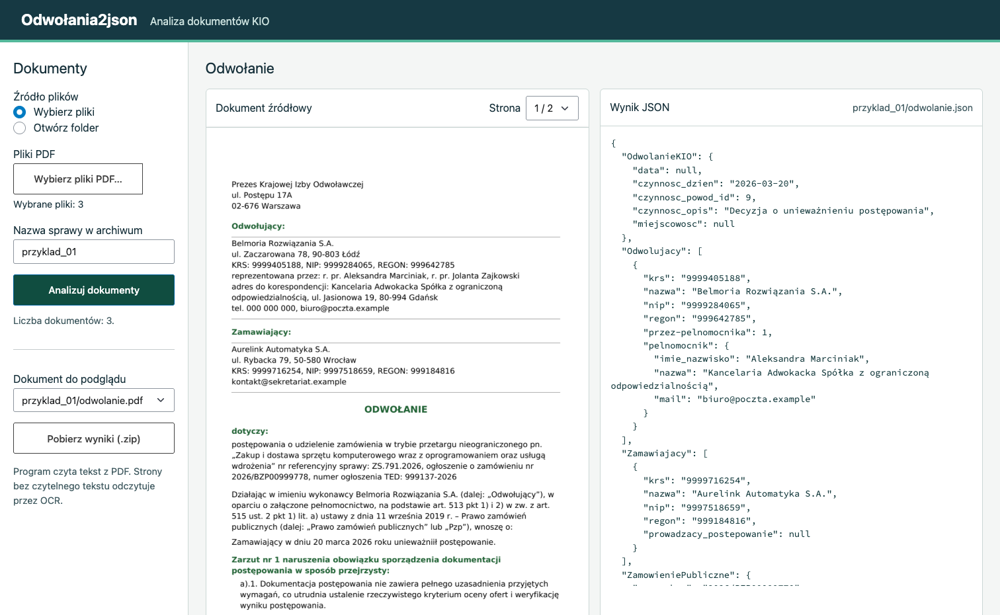

Zadanie UZP: Odwołania2json
HackNation 2026
Sprawa odwoławcza KIO: z PDF-ów do JSON-a.
doc2json
doc2json
doc2json
Zadanie UZP: Odwołania2json
HackNation 2026
„Dla człowieka zrozumienie takiej dokumentacji jest stosunkowo proste. Dla systemów informatycznych stanowi jednak duże wyzwanie.”
Problem
Zadanie UZP: Odwołania2json
HackNation 2026
dokument_01.pdf
dokument_02.pdf
dokument_03.pdf
dokument_04.pdf
doc2json
klasa z treści
pola ze schematu UZP
odwołanie
przelew
pełnomocnictwo
{} dokument spoza klas
doc2json
Kontrakt wejścia i wyjścia: README UZP, sekcja 3
03 / 12
Zadanie UZP: Odwołania2json
HackNation 2026
Strony, pełnomocnik, powód odwołania, numery postępowania.
Mocodawca, osoby podpisujące, pełnomocnicy.
Data, kwota, rachunki, tytuł.
doc2json
Schematy UZP: oczekiwane-json
04 / 12
Zadanie UZP: Odwołania2json
HackNation 2026
CLI
python -m kio2json
GUI
python -m kio2json.gui
Strona i API
docker compose up gui
każde wejście woła tę samą funkcję: batch.read_document
01
Tekst z PDF przez pdfplumber. Strona bez tekstu idzie do OCR: Tesseract na CPU.
02
Nagłówki i cechy pierwszych stron. Nazwa pliku nie gra roli.
03
Reguły dla trzech klas UZP. Na skanach czytamy bloki i kolumny z pozycji słów.
04
Daty, kwoty, NIP, KRS, PESEL, rachunki. JSON o nazwie PDF-u, {} dla innych.
config/classes/*.toml
Klasa: wzorce rozpoznania, pola, normalizatory, kolejność silników.
limity czasu
OCR: 180 s na stronę, po przekroczeniu jedna ponowna próba w 150 dpi, do 300 s dodatkowych odczytów na dokument, wspólny limit partii.
evals/
F1 pole po polu, na danych UZP i własnych.
Komponenty zewnętrzne i ich licencje: slajd 11.
doc2json
Pełny schemat: docs/pipeline/pipeline.pdf
05 / 12
Zadanie UZP: Odwołania2json
HackNation 2026
1,000
F1 według reguł UZP, 196 PDF-ów treningowych
wzorce z drukowanym prefiksem PL
1,000
F1 według reguł UZP, 30 skanów UZP
ścisłe 0,9974 · 29/30 identycznych JSON-ów
0,92
F1 według reguł UZP, 78 PDF-ów z prawdziwych spraw
0,9247 i 0,9244 · ścisłe 0,8921 i 0,8951
78/78
trafiona klasa
w tym 22 PDF-y spoza klas
Na 240 wygenerowanych wariantach układu F1 wyniosło 0,9125. To pomiary rozwojowe. Wynik na ukrytym zbiorze zna tylko jury.
doc2json
evals/results/variant-robustness.json · wersja 2c00fbb
06 / 12
Zadanie UZP: Odwołania2json
HackNation 2026
id = "accession"
name = "Zgłoszenie przystąpienia"
engines = ["labelled_fields"]
[routing]
threshold = 4
[routing.cues]
"zgłoszenie przystąpienia" = 3
"postępowania odwoławczego" = 1
"Przystępujący:" = 1
"Sygnatura akt:" = 1
[fields.nip]
normalizer = "nip"
validators = ["nip"]
pattern = '^NIP[ \t]*:[ \t]*(.+)$'
{
"sygnatura": "KIO 1234/26",
"przystepujacy": "Miedziana
Czapla Sp. z o.o.",
"nip": "1234567883",
"regon": "123456785",
"strona": "Zamawiającego",
"data_wezwania": "2026-03-11"
}
python -m kio2json --input examples/input
--classes examples/classes
Bez zmiany kodu i bez restartu GUI. Rozpoznanie z wag fraz, NIP i REGON sprawdzane sumą kontrolną.
doc2json
Wyciąg z konfiguracji klasy accession · przykładowy PDF z danymi zmyślonymi
07 / 12
Zadanie UZP: Odwołania2json
HackNation 2026

01
CLI na folderze
Sprawa z danych UZP, dokument spoza klas i dwa skany bez tekstu. Klasa i JSON dla każdego pliku.
02
PDF obok JSON-a
Ten sam wynik w GUI. Wyniki sprawy do pobrania jako ZIP.
03
Nowa klasa
Plik TOML zgłoszenia przystąpienia w katalogu klas, ponowna analiza i JSON nowego typu.
doc2json
Scenariusz z komendami: docs/pitch/demo.md · na zrzucie syntetyczny przyklad_01 UZP
08 / 12
Zadanie UZP: Odwołania2json
HackNation 2026
Jury ocenia elastyczność na podstawie opisu architektury, kodu i prezentacji.
50%
Jakość ekstrakcji, F1
Ukryty zbiór: co najmniej 10 spraw przygotowanych przez UZP. Na danych rozwojowych: 1,000 na 196 treningowych PDF-ach ze wzorcami uwzględniającymi drukowany prefiks PL oraz 0,9247 i 0,9244 na dwóch zbiorach po 39 PDF-ów.
1–20 pkt
Rozmiar modelu
Domyślnie 0 parametrów LLM: same reguły, dane nie wychodzą z komputera. Opcjonalnie Ministral 3B. UZP aktualizuje punktację modeli.
1–20 pkt
Nowe klasy bez przebudowy
Klasa to plik TOML: frazy z wagami, pola, normalizatory i sprawdzenia NIP, REGON, dat. Szkielet pliku z próbki PDF.
1–10 pkt
Inne funkcje
GUI z PDF-em obok JSON-a, ZIP z wynikami, strona i API w Docker Compose.
premia
Przejrzystość
Reguły w czytelnych plikach i null zamiast zgadywania. --explain wskazuje, gdzie wartość stoi w tekście.
doc2json
Regulamin § 2 ust. 4 · README UZP, sekcje 5 do 7
09 / 12
Zadanie UZP: Odwołania2json
HackNation 2026
01
Na miejscu, bez GPU
Instalacja przez pip albo Docker Compose. Domyślnie dane osobowe z pism nie opuszczają UZP. Na Apple M1 przy 2 procesach: 120 natywnych PDF-ów i 30 skanów w 300 s. Limit UZP: 45 minut na 150.
02
Zero kosztów modelu
Domyślnie same reguły: nie ma opłat za tokeny ani klucza API. Mały model to tylko opcja.
03
A jeśli wartość jest błędna?
GUI pokazuje PDF obok JSON-a. --explain podaje stronę i fragment tekstu z wartością, a gdy jej tam nie ma, zaznacza to w raporcie.
04
Kolejne pisma KIO
Pismo z etykietami to jeden plik TOML, np. zgłoszenie przystąpienia (5881 w 2025 r.). Bez etykiet potrzebny silnik llm albo ekstraktor w Pythonie.
05
Skala
W 2025 r. do Prezesa KIO wpłynęło 5986 odwołań. Ile czasu zajmuje dziś w UZP praca z ich dokumentami, nie mierzyliśmy.
06
Droga do pilotażu
Pomiar F1 naszym evals na próbce spraw z jednego miesiąca. Potem instalacja w sieci UZP przez Docker Compose.
doc2json
Raport KIO za 2025 r. (UZP) · evals/results/appeal-party-headings.json
10 / 12
Zadanie UZP: Odwołania2json
HackNation 2026
Biblioteki i modele są open source; opcjonalny profil woła API Mistral AI. Wskazujemy je, bo wymaga tego Regulamin, § 4 ust. 1.
OCR i PDF
Tesseract z Leptonicą, tesserocr · Apache-2.0, licencja BSD, MIT
tessdata_fast pol, eng · Apache-2.0
RapidOCR, modele PP-OCRv6, ONNX Runtime · Apache-2.0, MIT
pdfplumber, pdfminer.six · MIT
pypdfium2 (PDFium) · Apache-2.0, BSD-3-Clause
Pillow · MIT-CMU
Język i kontrola danych
Morfeusz 2 z danymi SGJP · BSD-2-Clause
python-stdnum (NIP, REGON, PESEL) · LGPL-2.1+
RapidFuzz · MIT
Babel · BSD-3-Clause
asn1crypto · MIT
Pydantic, pydantic-settings · MIT
Interfejsy i opcje
Shiny (GUI) · MIT
FastAPI, Starlette, uvicorn · MIT, BSD-3-Clause
Geist (czcionki) · SIL OFL 1.1
Opcjonalnie: pydantic-ai, SDK openai · MIT, Apache-2.0
Opcjonalnie: Ministral 3B · Apache-2.0, przez regionalne API Mistral AI
doc2json
Licencje z metadanych pakietów z requirements.txt i plików LICENSE
11 / 12
Zadanie UZP: Odwołania2json
HackNation 2026
Dziękujemy.
github.com/00200200/HackNation2026-2
doc2json.pl
doc2json
Michał Furgała · Ryszard Kacperski · Łukasz Lenkiewicz · Dominik Galus
12 / 12